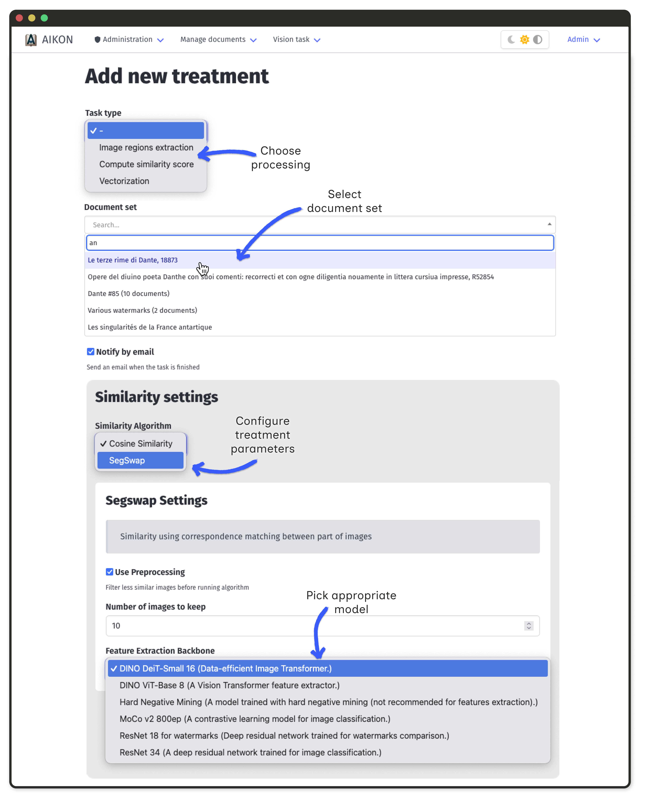
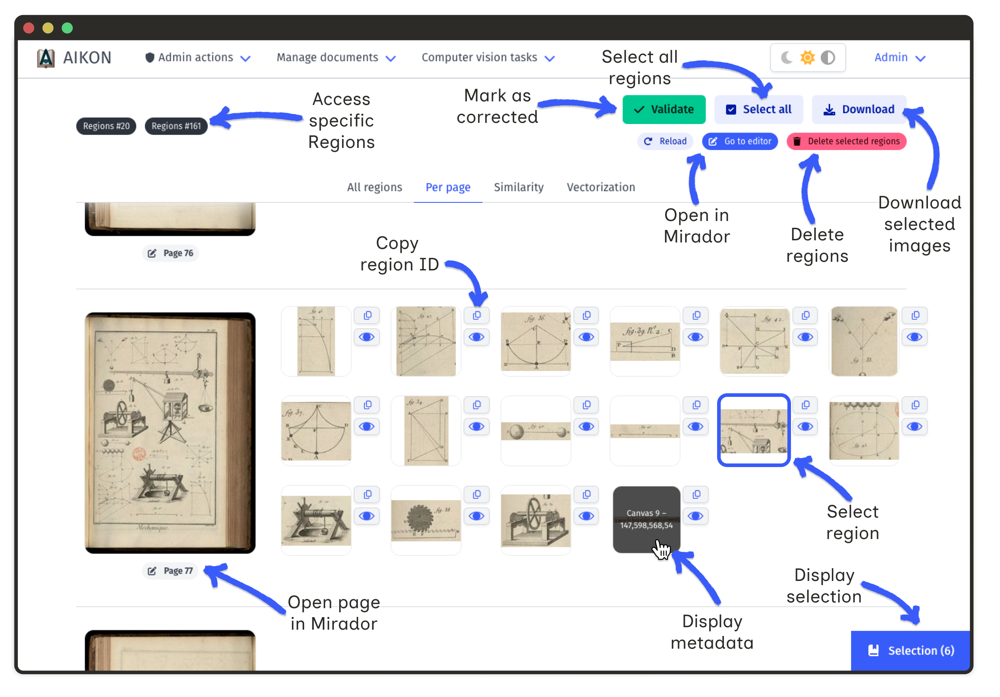
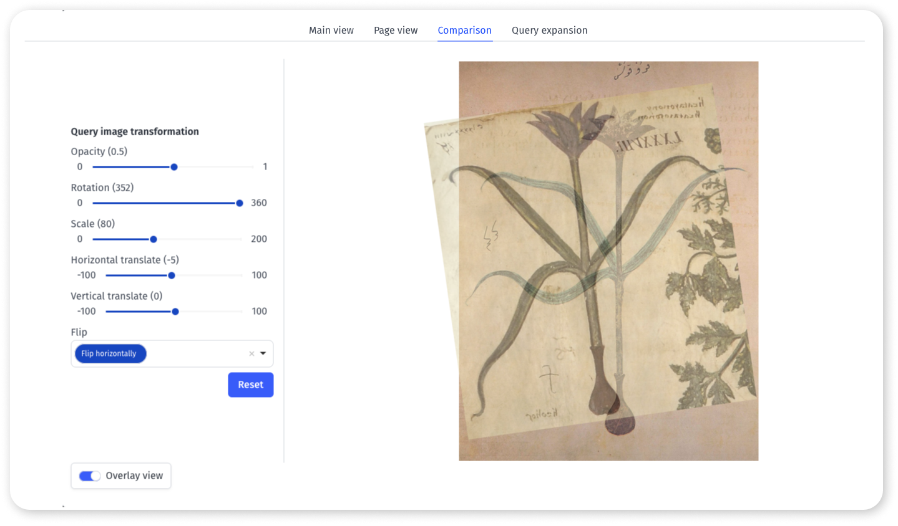

Document Processing
AIKON enables targeted processing of document sets using computer vision algorithms. Users select documents, configure treatments, and review results through dedicated interfaces.
Launching Treatments
Treatments represent tasks applied to document sets. AIKON handles three types of processes:
- Region localization identify visual components (illustrations, text lines, diagrams)
- Region comparison compute similarity scores between localized regions
- Region analysis generate metadata for regions (vectorization, transcription)

Once the document set is constituted or loaded into selection
Track treatment status in the treatment list interface. Processing time depends on document count and algorithm complexity.
Region Extraction Results
After region extraction, navigate to a witness to view detected regions. Two views are available:
- Document overview all regions displayed at once for quick review
- Per-page view paginated display for detailed inspection
Editing Regions
AIKON provides tools to correct automated detections:
- Delete regions select regions and click "Delete selected regions"
- Add missing regions click "Go to editor" to open the Mirador viewer
- Refine bounding boxes adjust region coordinates in the viewer

Similarity Results
The similarity interface displays ranked matches for each region. Researchers can classify correspondences and build validated networks.

Annotation Levels
- Exact match identical visual reproduction
- Partial match shared elements with modifications
- Semantic match similar content, different visual form
- No match false positive from the algorithm
Match Propagation
Annotated matches enable propagation: if A matches B and B matches C, then A and C form a propagated similarity. This helps reveal annotation inconsistencies and discover new connections.
Filtering and Comparison
Use the toolbar to filter results by score, witness, and similarity level. The detailed view (eye button) allows overlaying images for precise comparison.
